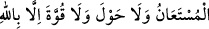
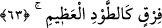
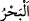
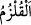
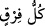
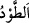

Abdullah b. Mes’ûd (r.a.)’ın şöyle dediği rivâyet edilmiştir: Rasûlullah (s.a.): “Sana
Mûsâ (a.s.)’ın deniz yarıldığında söylediği kelimeleri öğreteyim mi?” buyurdu. Ben de
“Evet.” dedim.
“Allah’ım hamd sana âiddir, şikâyet ancak sana yapılır, yalnız senden yardım
istenir, yardım isnenen ancak sensin. Güç ve kuvvet ancak Allah’ın yardımı iledir.
de.” buyurdu. İbn Mes’ûd der ki: “Bu kelimeleri, Nebî (a.s.)’dan işittiğimden beri terk
etmedim.”[8]
63. Bunun üzerine Musa’ya: “Asân ile denize vur!” diye vahyettik. (Vurunca
deniz) derhal yarıldı (on iki yol açıldı), her bölük koca bir dağ gibi oldu.
“Bunun üzerine Musa’ya:” Ey Mûsâ “Asân ile denize vur!” diye vahyettik.”
Bu deniz, Kızıldeniz’dir. Denize “
” denilmesi, genişliğinden ve yaygınlığından
dolayıdır. Kızıldeniz, Fars denizinin bir tarafıdır. “
(Kızıldeniz)” denizin Mısır
sahilindeki bir küçük beldenin ismidir. Mısırla arası yaklaşık üç günlük yoldur. Harabe
halindedir. Bugün yeri “Süveyş” diye bilinir. Acrûd’un karşısında Mısır’dan Mekke’ye
giden hacıların konakladığı bir menzildir. Fir’avn, buraya yakın bir yerde boğulmuştur.
Kızıldeniz; karanlık ve ıssız bir deniz olup, zâhiren ve bâtınen onda hayır yoktur.
Medyen şehri, bu denizin sahilindedir. Bugün orası da haraptır. Mûsâ (a.s.)’ın Şuayb
(a.s.)’ın koyunlarına su çıkardığı kuyu da oradadır. O kuyu da şimdi âtıl haldedir.[9]
Kâşifî der ki: “Mûsâ (a.s.) denizin kenarına geldi, asâsını denize vurdu ve: “Ey Ebû
Hâlid[10] bize yol ver.” dedi.”
Mûsâ (a.s.) asâsını denize vurdu, denizin suyu “derhal yarıldı”. İsrâiloğulları’nın
kabîleleri sayısınca on iki yol açıldı. “Her bölük” yani denizden ayrılan, kopan her
parça “koca”, yerinde sâbit, göğe yükselen “bir dağ gibi oldu.”
el-Müfredât’ta der ki: “
” ile “
” mânâları birbirine yakın kelimelerdir. Fakat
yarılma anlamına “
”, ayrılma anlamına ise “
” kelimesi kullanılır. “
” ise
ayrılmış parça/bölüm demektir.”
“
”de râ harfi bütün kırâat imamlarına göre tefhıym (kalın) ve terkıyk (ince)
olarak okunabilir. Ancak tefhıym evlâdır.
Râğıb der ki: “
” büyük dağ demektir. Ayrıca “koca” diye vasfedilmesi, diğer